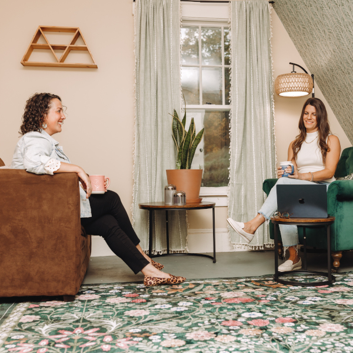
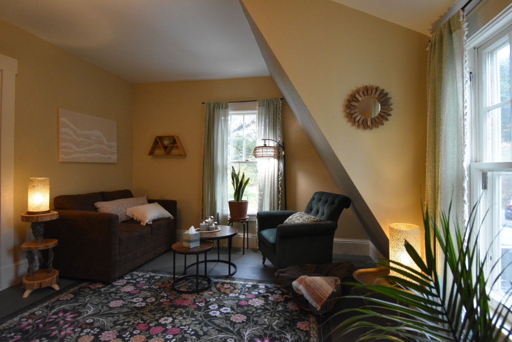

About Moving Mountains Counseling & Wellness
Transforming Challenges Into Growth, One Step at a Time
At Moving Mountains Counseling & Wellness, we believe healing is a journey—one that doesn't have to be taken alone. Whether you're sitting across from us in our office in Princeton, joining us virtually from your home anywhere in Massachusetts, or walking side by side on a wooded trail, our role is to meet you where you are and help guide you forward.

We created this practice to be more than just a therapy office. We wanted to build a space—indoors, online, and outdoors—that feels safe, compassionate, and deeply human. A place where your story is heard, your struggles are honored, and your strengths are celebrated.
Our name, Moving Mountains, comes from the belief that while life's challenges can feel overwhelming, they are not immovable. With the right support, even the heaviest burdens can shift. Sometimes that means exploring painful experiences. Sometimes it means finding clarity in the quiet of nature. And often, it means taking one small step at a time toward a lighter, freer way of being.
We work with clients experiencing anxiety, depression, stress, life transitions, grief, relationship challenges, and those simply seeking greater balance and meaning. We offer:
- In-Person Therapy in Princeton, MA
- Telehealth Counseling across Massachusetts
- Nature-Based Therapy including walk & talk sessions and seated outdoor sessions
At the heart of our work is one simple promise: we're here to listen, and we're here to walk with you.

